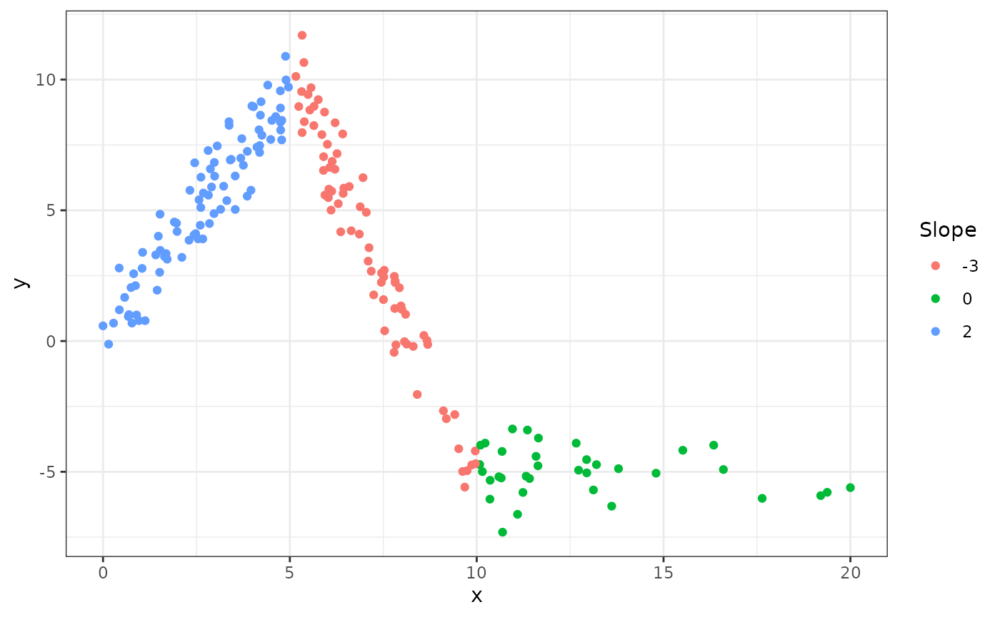
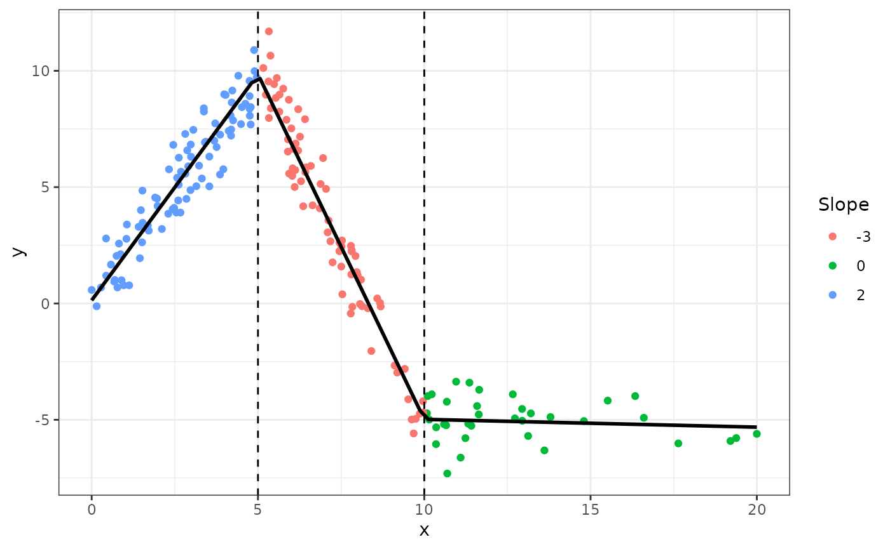
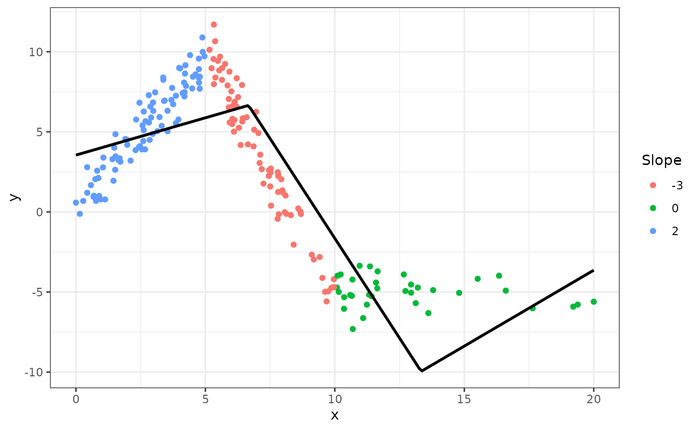
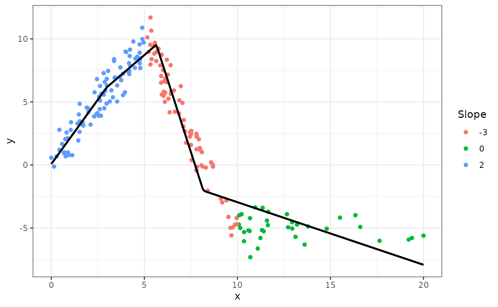

Here are some examples of using lspline(),
qlspline(), and elspline().
Generate example data
We will use the following artificial data with knots at
x=5 and x=10
set.seed(666)
n <- 200
d <- data.frame(
x = scales::rescale(rchisq(n, 6), c(0, 20))
)
d$interval <- findInterval(d$x, c(5, 10), rightmost.closed = TRUE) + 1
d$slope <- c(2, -3, 0)[d$interval]
d$intercept <- c(0, 25, -5)[d$interval]
d$y <- with(d, intercept + slope * x + rnorm(n, 0, 1))Plotting y against x:
library(ggplot2)
fig <- ggplot(d, aes(x=x, y=y)) +
geom_point(aes(color=as.character(slope))) +
scale_color_discrete(name="Slope") +
theme_bw()
fig
The slopes of the consecutive segments are 2, -3, and 0.
Setting knot locations manually
We can parametrize the spline with slopes of individual segments
(default marginal=FALSE):
| term | estimate | std.error | statistic | p.value |
|---|---|---|---|---|
| (Intercept) | 0.1343204 | 0.2148116 | 0.6252941 | 0.5325054 |
| lspline(x, c(5, 10))1 | 1.9435458 | 0.0597698 | 32.5171747 | 0.0000000 |
| lspline(x, c(5, 10))2 | -2.9666750 | 0.0503967 | -58.8664832 | 0.0000000 |
| lspline(x, c(5, 10))3 | -0.0335289 | 0.0518601 | -0.6465255 | 0.5186955 |
Or parametrize with coeficients measuring change in slope (with
marginal=TRUE):
| term | estimate | std.error | statistic | p.value |
|---|---|---|---|---|
| (Intercept) | 0.1343204 | 0.2148116 | 0.6252941 | 0.5325054 |
| lspline(x, c(5, 10), marginal = TRUE)1 | 1.9435458 | 0.0597698 | 32.5171747 | 0.0000000 |
| lspline(x, c(5, 10), marginal = TRUE)2 | -4.9102208 | 0.0975908 | -50.3143597 | 0.0000000 |
| lspline(x, c(5, 10), marginal = TRUE)3 | 2.9331462 | 0.0885445 | 33.1262479 | 0.0000000 |
The coefficients are
-
lspline(x, c(5, 10), marginal = TRUE)1- the slope of the first segment -
lspline(x, c(5, 10), marginal = TRUE)2- the change in slope at knot \(x=5\); it is changing from 2 to -3, so by -5 -
lspline(x, c(5, 10), marginal = TRUE)3- tha change in slope at knot \(x=10\); it is changing from -3 to 0, so by 3
The two parametrisations (obviously) give identical predicted values:
graphically
fig +
geom_smooth(method="lm", formula=formula(m1), se=FALSE, color = "black") +
geom_vline(xintercept = c(5, 10), linetype=2)
Knots at n equal-length intervals
Function elspline() sets the knots at points dividing
the range of x into n equal length
intervals.
| term | estimate | std.error | statistic | p.value |
|---|---|---|---|---|
| (Intercept) | 3.5484817 | 0.4603827 | 7.707678 | 0.00e+00 |
| elspline(x, 3)1 | 0.4652507 | 0.1010200 | 4.605529 | 7.40e-06 |
| elspline(x, 3)2 | -2.4908385 | 0.1167867 | -21.328105 | 0.00e+00 |
| elspline(x, 3)3 | 0.9475630 | 0.2328691 | 4.069080 | 6.84e-05 |
Graphically
fig +
geom_smooth(method="lm", formula=formula(m3), se=FALSE, n=200,
color = "black")
Knots at quantiles of x
Function qlspline() sets the knots at points dividing
the range of x into q equal-frequency
intervals.
| term | estimate | std.error | statistic | p.value |
|---|---|---|---|---|
| (Intercept) | 0.0782285 | 0.3948061 | 0.198144 | 0.8431388 |
| qlspline(x, 4)1 | 2.0398804 | 0.1802724 | 11.315548 | 0.0000000 |
| qlspline(x, 4)2 | 1.2675186 | 0.1471270 | 8.615132 | 0.0000000 |
| qlspline(x, 4)3 | -4.5846478 | 0.1476810 | -31.044273 | 0.0000000 |
| qlspline(x, 4)4 | -0.4965858 | 0.0572115 | -8.679818 | 0.0000000 |
Graphically
fig +
geom_smooth(method="lm", formula=formula(m4), se=FALSE, n=200,
color = "black")